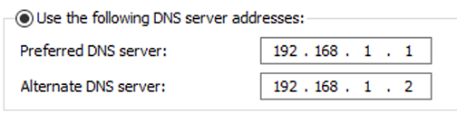

4. Nâng máy Client thành Additional Domain Controller (ADC) chạy song song với máy DC (Primary DC - PDC) có sẵn trong domain domain1.local:
Các bước nâng PC thành ADC:
Logon bằng quyền của Domain Admin.
Chỉnh Alternate DNS Server về máy sẽ nâng cấp thành ADC (PC2).
Start → Control Panel → Network and Internet → Network and Sharing Center → NET1

Cài đặt Active Directory Domain Services
tương tự phần 1
Cấu hình máy PC2 thành Additional Domain Controller
Thực hiện giống câu 1 tuy nhiên tại bước Deployment Configuration chọn “Add a domain controller to an existing domain”.
Kết quả sau khi thực hiện nâng cấp PC2 thành ADC, kiểm tra trong Active Directory Users and Computers ta thấy lúc này client không còn hiển thị máy tính nào, ở Domain Controller chúng ta có 2 máy DC chạy song song nhau:
5. Giáng cấp (demote) máy sever từ PDC thành Standalone. Sau đó, xem xét sự thay đổi:
Bước làm:
Gỡ cài đặt Active Directory Domain Services
Mở Server Manager: Start → Server Manager.
Chọn Manage → Remove Roles and Features
Before You Begin → Next
Server Selection → Chọn máy PC1.domain1.local → Next
Server Roles → Bỏ chọn Active Directory Domain Services → Remove Features → Next → Demote this domain controller
Credentials → Force the remove of this domain controller → Next.
Warnings → Proceed with removal → Next
New Administrator Password → Tùy ý
Review Options → Demote
Results → Close.
Sau khi giáng cấp PC1 (PDC) lúc này không còn tài khoản domain, mà chỉ còn lại một local account:
Chúng ta không thể truy cập cũng như chỉnh sửa các thành phần Active Directory Users and Computers, Active Directory Domains and Trusts, Active Directory Sites and Service được nữa:
{kind=link}
{kind=link}
{kind=link}
{kind=link}
{kind=link}
{kind=link}
{kind=link}
{kind=link}
{kind=link}
{kind=link}
{kind=link}
{kind=link}
{kind=link}
{kind=link}